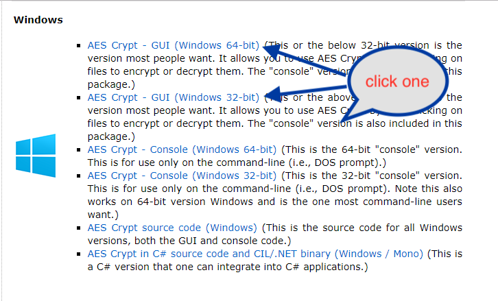
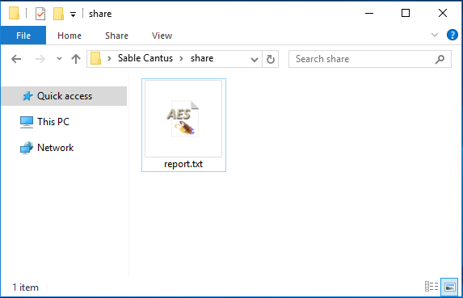
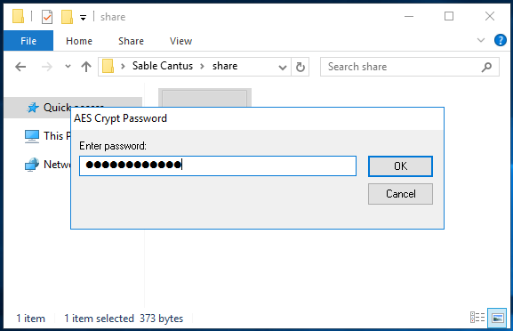
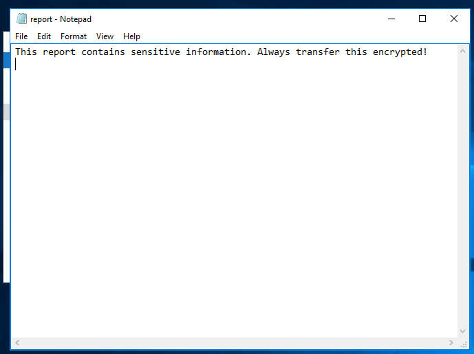

tldr;
You are receiving those sensitive documents and do not want anyone getting your clients information. Great job! Your client has followed the instructions to use aescrypt and get these documents to you. Now what do you do? Decrypt them!
Aescrypt is available for all types of computers. We will demonstrate how to decrypt a file for Windows 10 users.

Follow the windows prompt to install aescrypt as you would any other piece of software.
Your client should have provided you with a temporary file link to download the encrypted document(s) to your computer.

This is typically over a voice call or via encrypted messenger.
Double-click on the file and enter the password provided by your client.

Your file is now decrypted on your computer. You may inform your client that they are clear to remove the file from the temporary download site.
